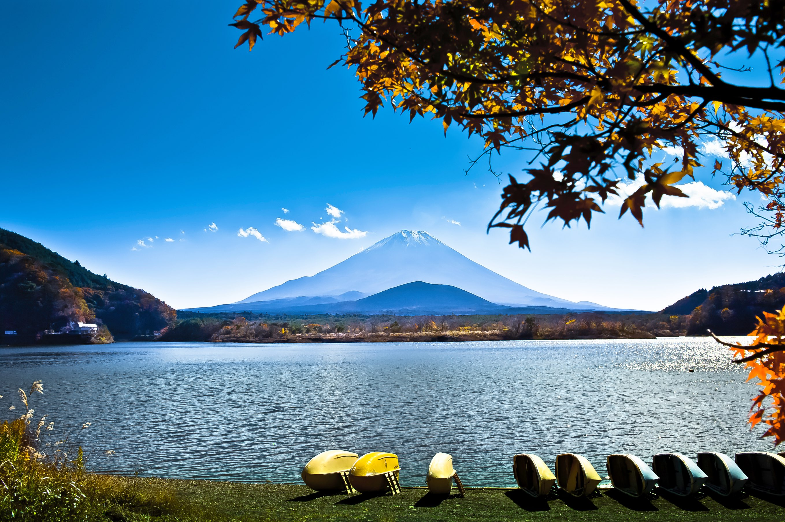

Hakone
Hakone is a relaxing getaway known for its hot springs, Lake Ashi cruises, and stunning views of Mount Fuji. Located about 1.5–2 hours from Tokyo by train, it is especially beautiful in autumn (October–November) when the fall colors surround the region.
